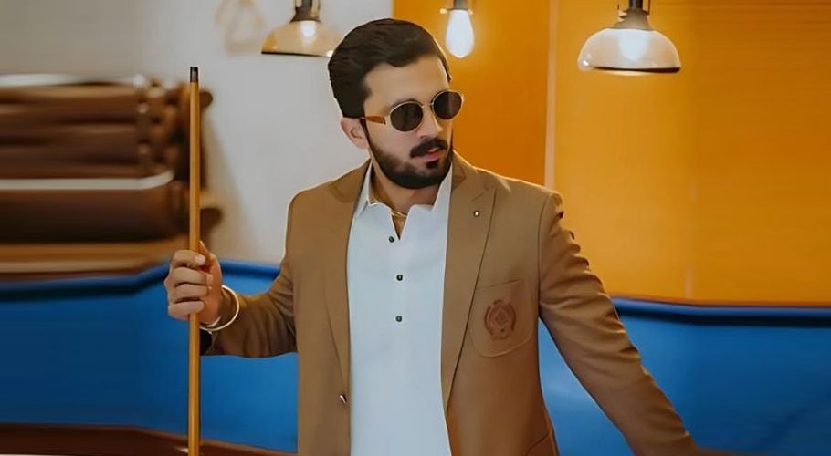

Rajab Butt is a famous Pakistani YouTuber that creates engaging content. He has a massive fan following on his social media accounts. Rajab built a digital following on YouTube and social networks because he does not confine himself to a particular area in his activities. He posts vlogs, comedy skits, and lifestyle content. Rajab was born on December 28, 1994, in Lahore, Pakistan. He emerged as an essential figure within the YouTube community, especially among the youth. Rajab’s increasing popularity can be greatly attributed to his humorous and relatable approach to reaching his audiences. Starting his YouTube in 2015, Rajab Butt uploaded short skits and some entertaining clips featuring his style. Later, Rajab attempted to enrich the content and began posting vlogs about his everyday life, travels, and the popular YouTuber he collaborated with. This blog post will discuss everything you need to know about Rajab Butt and his successful career as a YouTuber. Let’s discuss information about your favorite YouTuber!
Rajab Butt was exposed to various forms of artistic expression right from his childhood. It helped him develop an interest in entertainment and storytelling. Such exposure strongly influenced his formative years, deciding his interest in engaging in content creation in the future. Rajab pursued his education and later focused on his interests in videomaking and working as an online content producer. His videos’ unique style and funny nature quickly attracted many fans. Rajab has been very fortunate that all his family has provided him with unwavering support throughout the bumps in his career and encouraged him to continue to create content. He recognized his channel’s opportunity to create an audience and became a full-time YouTuber. Since this point in his career, he has focused on creating entertaining and informative content that his audience will appreciate.
Rajab Butt has achieved a lot from the beginning of his YouTube career till now. His content on YouTube is eclectic, as he creates comedy, lifestyle, and travel videos, meaning he has a large scale range.
YouTube Debut: In 2015, Rajab debuted his self-titled channel, where he showcased his talent in stand-up comedy and received an overwhelming response for his work. Subscriber Growth: Rajab Butt, as of the year 2024, has managed to gain a massive audience base and has over three million subscribers, which makes him a household name within the Pakistani Youtube community. Content Diversity: Rajab Butt’s channel includes vlogs, comedies, sketches, challenges, and shoutouts to other tuners, which makes him enjoyable to watch. Awards and Recognition: Fans of the Youtube star have helped Rajab Butt win several awards for his work, including additional subscribers for the ‘Milestone Awards’ on Youtube. Influencer Collaborations: The famous influencer has partnered with many different influencers and brands, growing his reach further.
Rajab Butt is making family vlogs. His most Vlog content is about pranks. Rajab pranks his mother, father, sister, wife, and friends. His vlogs are entertaining and engaging. If you like to see family entertainment, you must watch his videos. Moreover, he is also a religious person and makes vlogs on it. You can see different types of content on his YouTube channel. Check his YouTube channel to watch his recent vlogs
Rajab Butt has also made a significant appearance on other social media platforms. He has an account on Instagram, Twitter, and Facebook. He uses these accounts to interact with and update his audiences about himself and his YouTube account. His posts also helped increase the number of fans from different platforms.
Rajab Butt loves to communicate with his followers and makes sure to listen to their opinions when creating content. He is also an active tech lover, and topics related to gadgets and video creation is standard features on his pages. Rajab is also a passionate traveler and often posts travel vlogs on his YouTube channel. He regularly does charity work and participates in activities promoting education and healthcare-related issues in Pakistan
Rajab Butt is keen on developing and growing his YouTube channel both in terms of subscribers as well as the content. He intends to delve into different genres, especially web series and documentary content, which will broaden his audience even more. Aside from that, Rajab has plans to work with foreign content creators to enrich his content variety and acquire new perspectives on diverse cultures. He is also a devoted person who tries to contribute to society. He intends to carry out activities where he will help motivated content creators based in Pakistan. Rajab has faith in talent development and wishes to help others realize their digital goals.